Assembly notes
Please note that depending on the kit version, you may not have to follow all the steps:
- If you are building a minichord from scratch, start at PCB Manufacturing
- If you have the "PCB kit" or the "electronics kit", start at Through-hole soldering
- If you have the "full kit" start at Final assembly
In any case, bill of material (BOM) and necessary tools are listed at the beginning of each section.
PCB Manufacturing
Manufacturing files for the PCB are available in the Source section in Gerber format.

A minichord is composed of two PCB:
- The main PCB that is a four layer 1.6mm board;
- The touch zone PCB that is a two layer 1.6mm board (please remember that this PCB will be visible, so choose colour accordingly and remove any marking that the fab house would like to add).
Any good fab house should accept those files for manufacture.
SMD Soldering
BOM
| ID | Value | Footprint | Quantity |
|---|---|---|---|
| > C1, C2 | 10uf | 1608Metric | 2 |
| > C4, C9, C10 | 2.2uf | 2012Metric | 3 |
| C5 | 100uf | Elec_6.3x5.7 | 1 |
| C6 | 100uf | 3216Metric | 1 |
| > C3, C7, C8, C11-C14, C19 | 100n | 1608Metric | 8 |
| C15 | 10uf | Elec_4x5.4 | 1 |
| > C16, C17 | 2.2nf | 1608Metric | 2 |
| C18 | 4.7uf | 2012Metric | 1 |
| D3 | LED_Dual_AAKK | side led | 1 |
| L1 | 6.8uH | SWPA60xxS | 1 |
| R1 | 1k | 2012Metric | 1 |
| R3 | 330k | 1608Metric | 1 |
| R4 | 680 | 2012Metric | 1 |
| > R2, R5 | 1.8M | 1608Metric | 2 |
| R6 | 220k | 1608Metric | 1 |
| R7 | 1M | 1608Metric | 1 |
| R8 | 2k | 2012Metric | 1 |
| > R9, R10 | 2k2 | 2012Metric | 2 |
| > R11-R14, R16, R38-R40 | 10k | 2012Metric | 8 |
| R15 | 75k | 1608Metric | 1 |
| > R27-R30 | 22 | 1608Metric | 4 |
| R34 | 560 | 1608Metric | 1 |
| R35 | 100 | 1608Metric | 1 |
| R36 | 200 | 1608Metric | 1 |
| > R31, R32, R37 | 470 | 1608Metric | 3 |
| U2 | TPS61090 | PVQFN-N16_EP2.7x2.7mm | 1 |
| U3 | MCP73831-2-OT | SOT-23-5 | 1 |
| U4 | 74HC595 | SOIC-16_3.9x9.9mm_P1.27mm | 1 |
| U5 | PCM5102 | TSSOP-20_4.4x6.5mm_P0.65mm | 1 |
| U6 | MPR121QR2 | UQFN-20_3x3mm_P0.4mm | 1 |
The main PCB requires some SMD components. If you are experimented with SDM soldering it is possible to do that step yourself. However it requires quite advanced capabilities to properly solder the IC packages used. The "PCB kit" contains the PCB with the SMD components pre-soldered.
For the placement of the component, please refer to this document.
{kind=link}
Once all the component are soldered, your PCB should look like this:
Through-hole soldering
BOM
| ID | Part | Link | Included in “PCB kit” | Quantity |
|---|---|---|---|---|
| D1 | Red LED | Mouser | No | 1 |
| D2 | 5mm RKGB LED | - | Yes | 1 |
| J2 | Switched Audio Jack | Mouser | No | 1 |
| J3 | JST PH 2mm 2pin male angled | - | Yes | 1 |
| N/A | 503450 1000mAh battery | - | Yes | 1 |
| > RV1-RV3 | Potentiometer | Mouser | No | 3 |
| > SW22, SW24, SW25, SW26 | Tactile switch 6x6mm | Mouser | No | 2 |
| > SW1-SW21 | Tactile switch 12x12mm | Mouser | No | 21 |
| > J1, J4 | Touch header female | Mouser | No | 2 |
| N/A | Touch header male | Mouser | No | 2 |
| U1 | Teensy 4.0 | PJRC | No | 1 |
| N/A | Teensy headers | Mouser | No | 1 |
Note:
- If you have the "PCB kit", purchase the additional components from Mouser, and the Teensy from PJRC or any other reseller;
- If you have the "electronics kit", all component both from Mouser and the "PCB kit" are included. Just purchase the Teensy from PJRC or any other reseller.
To facilitate ordering from Mouser, here is a prefilled basket.
Tools
- Soldering iron and solder wire;
- X-acto knife (or another precise cutter);
- Diagonal cutting pliers (the Knipex "Super Knips" are worth the price);
- [Optional] Multimeter.
Before starting the soldering, it might be useful to identify the position of each component and do a dry run assembly. This will ensure you properly identify the position of each part and, in consequence, that you indeed have all the components of the BOM.
Parts preparation
Some parts require a few modification before starting with the soldering.
Teensy preparation
First, some small modifications need to be made to the Teensy 4.0 Board.
The onboard led needs to be disabled. This step is purely aesthetic so if you don't feel confortable doing that modification it is ok (it will simply give your minichord a soft orange glow).
The led is next to the pin 13 of the Teensy. To identify it, simply plug your teensy using a micro USB cable. The led will blink.

There is a trace on the top side between the led and the reset pushbutton. Cut that trace using the X-acto (the specific position is in red in the image below).
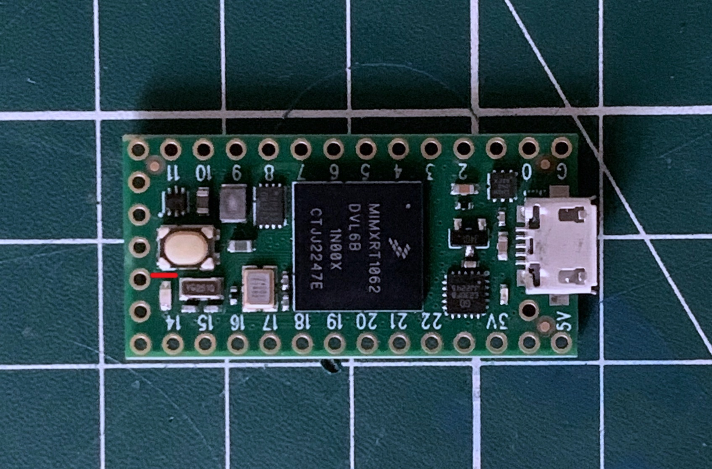
Plug the Teensy again, and check that the led is not blinking anymore. To make sure that you did not damage the Teensy, you can simply use the Teensyduino program to upload any sketch and check that it is still working normally (while the led is not glowing).
Then we need to cut the USB power. This step is not optional as it allows battery to function as expected. USB power will then be routed to the battery for charging and the Teensy will only be powered when an audio jack is inserted.
There is pads on the belly of the Teensy specifically for that reason. It is situated next to the 5V pin. With the X-acto, cut the trace between the two exposed pads.
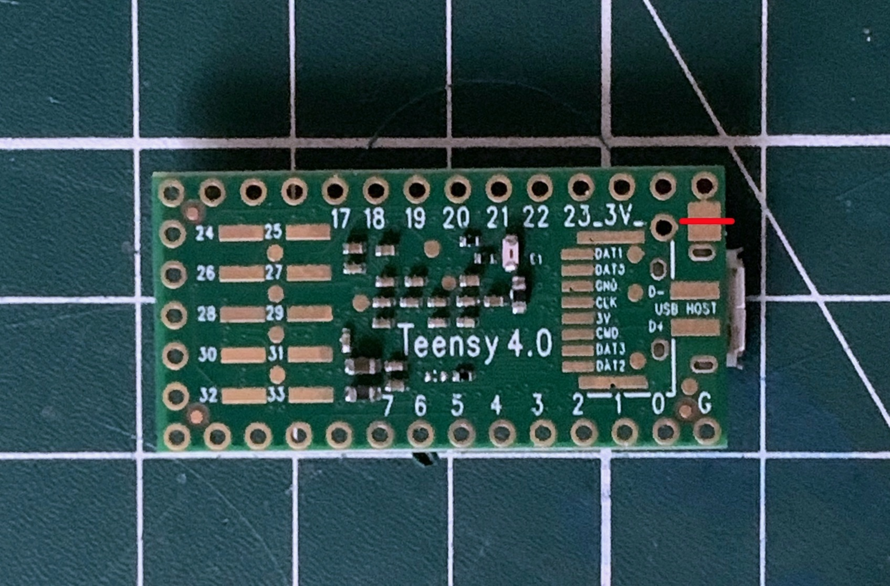
Once it is done, it's a good idea to check with a multimeter that there is indeed no contact between the two pads.
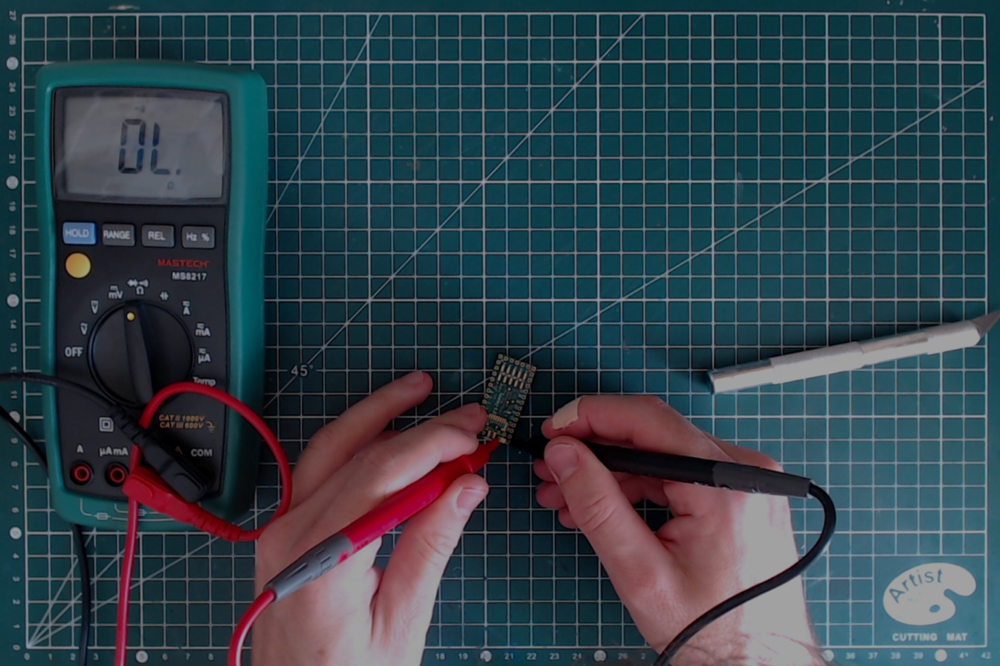
Potentiometer preparation
Because of the low clearance within the minichord, it is necessary to slightly modify the potentiometers. On the top of the square enclosure, there is four round green plastic spikes. They need to be cut.
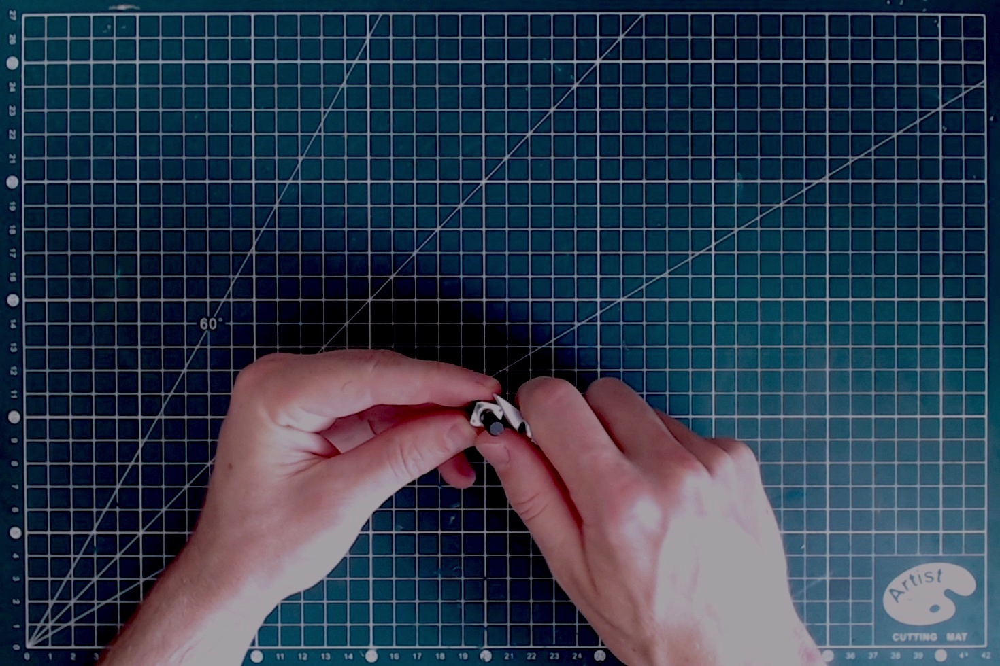
Do that for all three potentiometer, be careful not to cut yourself.
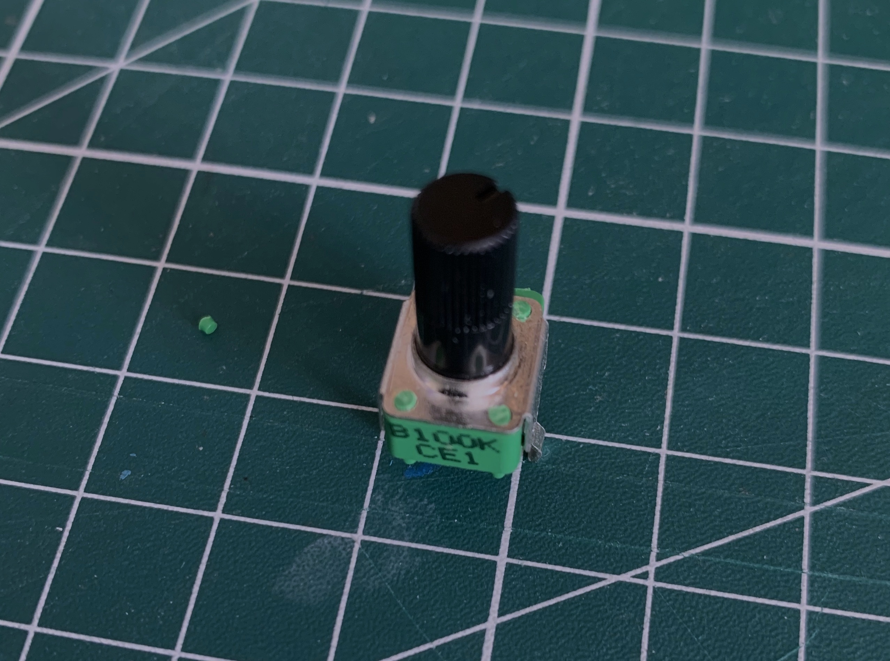
We can now start with the soldering!
Pushbuttons soldering
12x12mm pushbuttons
Let's start with the 12x12mm pushbuttons. The first step is to insert them all (21) on the PCB. It is a close fit, so to make it easier start with the middle line of buttons.
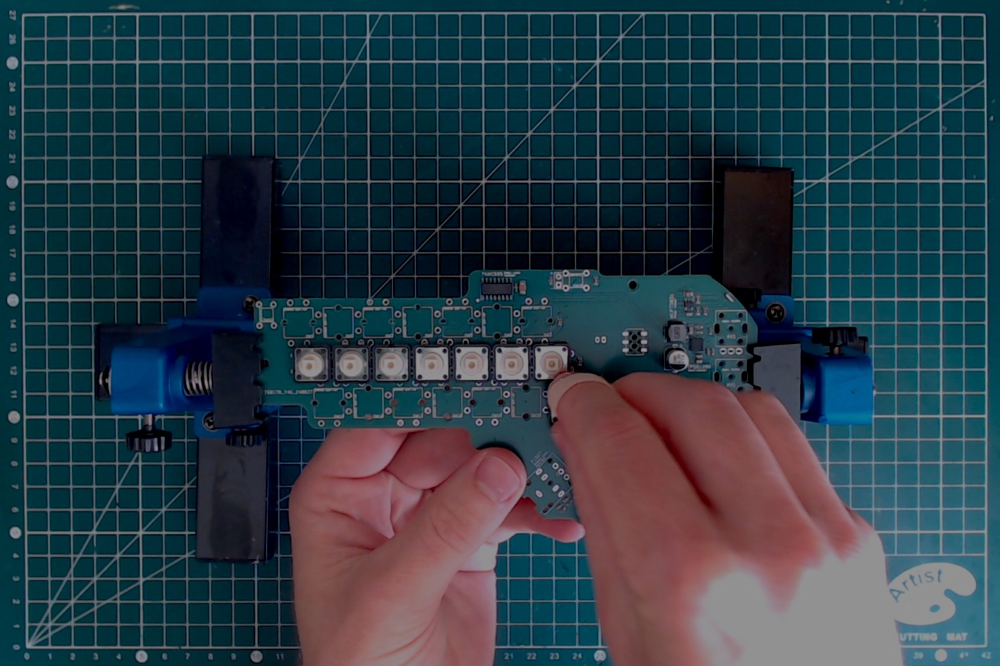
They need to be pushed firmly onto the PCB to properly latch. Make sure that they are all in place and seating flat before starting the soldering.
Once all buttons are properly soldered, they need to be cut flush on the bottom side on the PCB. It is important because they are seating on top on the battery and we do not want their metal leads to cut into the pouch.
On PCB version 0.4 and above, a white mark shows the precise outline of the battery so you can make sure that nothing protrudes in that zone. Once all buttons are cut flush, make sure to clean the cuttings from the PCB, as they could cause unwanted contact.
6x6mm pushbuttons
The process is very similar to the 12x12mm button. First insert all the four pushbuttons, making sure they are fully seated before soldering. Here clipping the leads is optional but recommended.
Once done your PCB should look like this:

Audio jack soldering
As before, make sure the jack is fully seated before soldering.
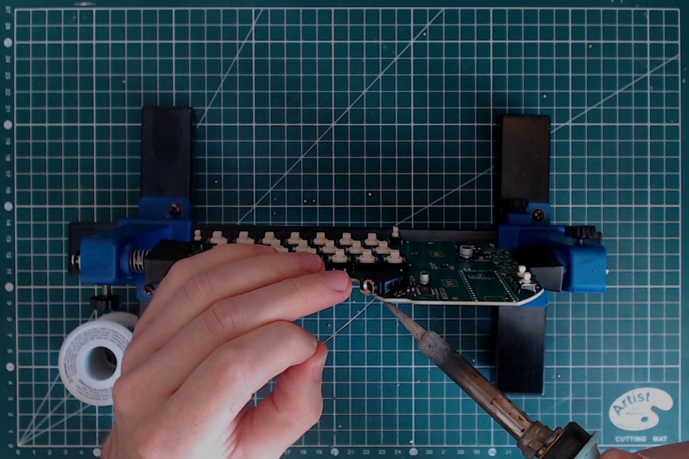
Note: in PCB v0.3 and before, it is necessary to:
- cut the top left contact of the Audio jack before soldering (when looking from the top of the PCB, with the jack entry at the bottom);
- add a 10k pulldown resistor between the enable and ground pin of the jack (both at the center of it).
Led soldering
Two leds need to be soldered.
First the RGB led. The provided led is a RKGB led. Those letters indicate the order of the pins, with R, G and B for the individual colours and K for the common cathode. The K pin is the longest and the position of each pin is indicated on the PCB itself.
The RGB led needs to be fully seated in place before soldering.

Once soldered, cut the lead flush with the diagonal cutter.
The next one is the red led. The longest pin is the +, and the position of each pin is indicated on the PCB itself.
This led should not be fully seated. the top of the led should be about the level of the top of the pushbutton next to it.

Once soldered, cut the leads flush with the diagonal cutter.
Header soldering
Now we need to solder the female header that will allow the touch PCB to connect.
Those headers are really SMD components but they are really easy to solder. Just put them in place, making sure they are flush (they should hold in place) and solder each pin.
Teensy soldering
First prepare the headers using the X-acto knife. You will need:
- Two 14-long header strip for each side of a Teensy;
- A lone header for the out-of-row contact for the VUSB pin. If you are unsure which pin it refers to, take a moment to look at the Teensy pinout card to identify it and locate its position on the PCB. Failure to place correctly that header will keep the battery from charging.
Now you can place the headers on the board, with the short length on the Teensy's side. Position the Teensy, belly up, and make sure it is correctly seated. You can then solder the two end of each header line to "tack" the header in place.

Check that the Teensy is well seated, then do the same on the PCB's side. After a final check that the Teensy is well seated, you can then go over all the contact, both on the Teensy and on the PCB's side and solder them. Don't forget to solder the VUSB pin.

Next, using the diagonal cutters, cut short the excess headers on the PCB's side.
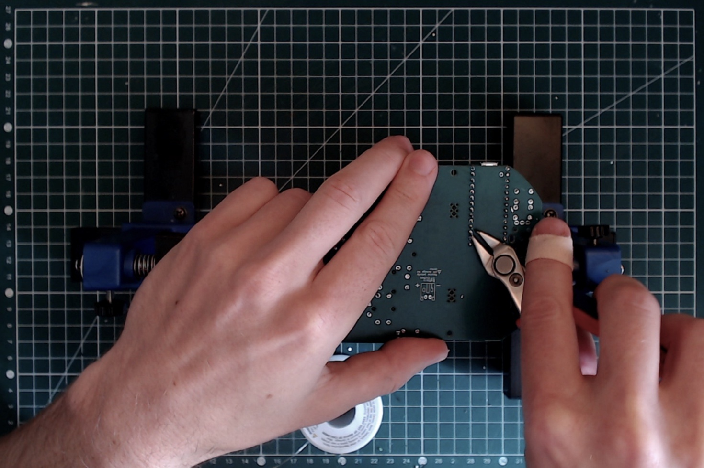
Potentiometers
First place the three potentiometer.

Note that a low-profile trace is used, which means that the potentiometer sit deeper than they usually would. Make sure that they are fully seated.
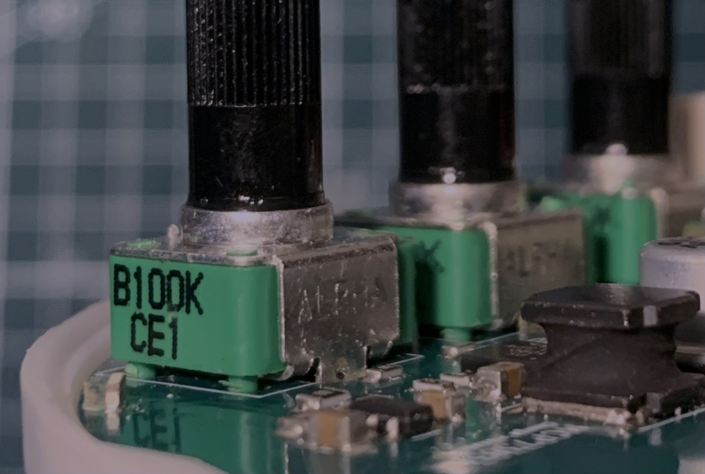
They will hold in place while you solder them.
Battery connector
This component is on the backside of the PCB. The silkscreen show the correct position for the connector, so place it accordingly.
If the connector is installed backward and the battery is connected that way, it will destroy the device. You need to make sure that when the battery will be connected, the polarity will be respected.
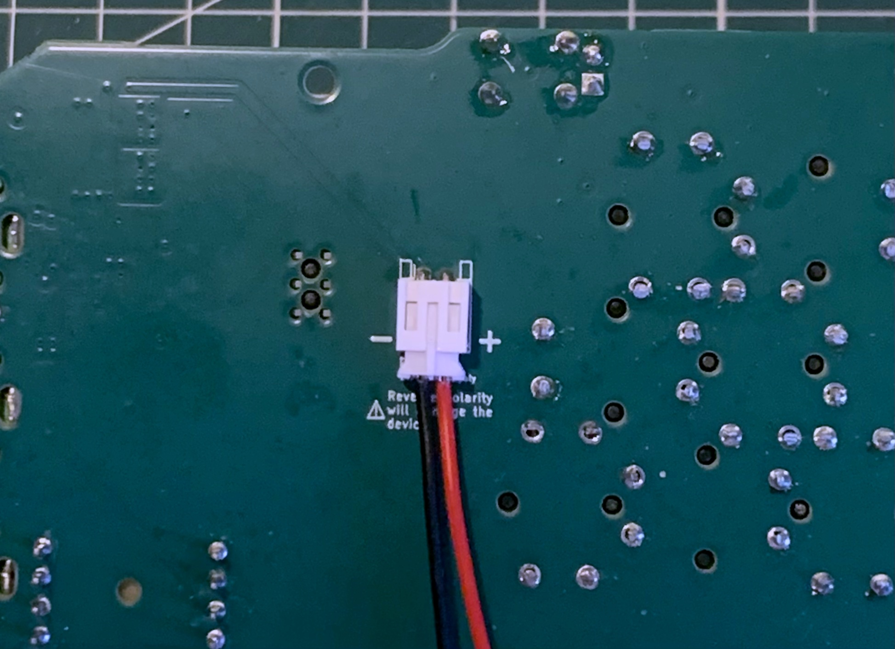
Note: If you purchased the battery yourself, you need to make sure the connector attached to it is not reversed, as it sometimes happen. In that case choose the orientation of the connector to solder to make sure that the red wire of the battery indeed is connected to the positive side (following the silkscreen marking).
Soldering of touch zone PCB
The last bit of soldering needed is the headers on the touch zone PCB. Once again, those are technically SMD components, but easy enough to solder. Just make sure they are well aligned.
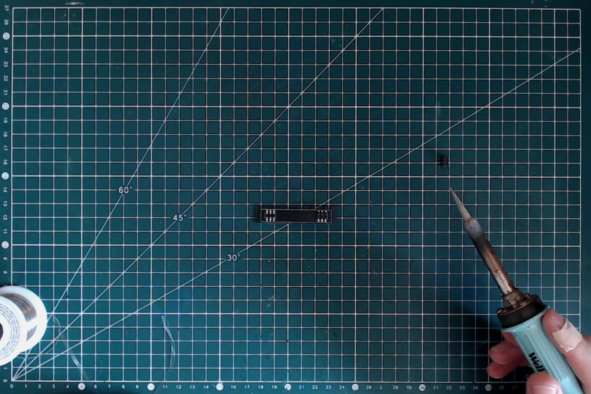
Firmware uploading
BOM
- Fully assembled minichord PCB;
- 503450 1000mAh battery;
Tools
- Micro USB cable (make sure it supports data transfert);
- Computer (whether Windows, OSX or Linux);
- Headphones;
Testing the board
First it is necessary to make sure the board is properly functioning.
Without plugging the battery, plug in the micro USB. The power status led should light up green.
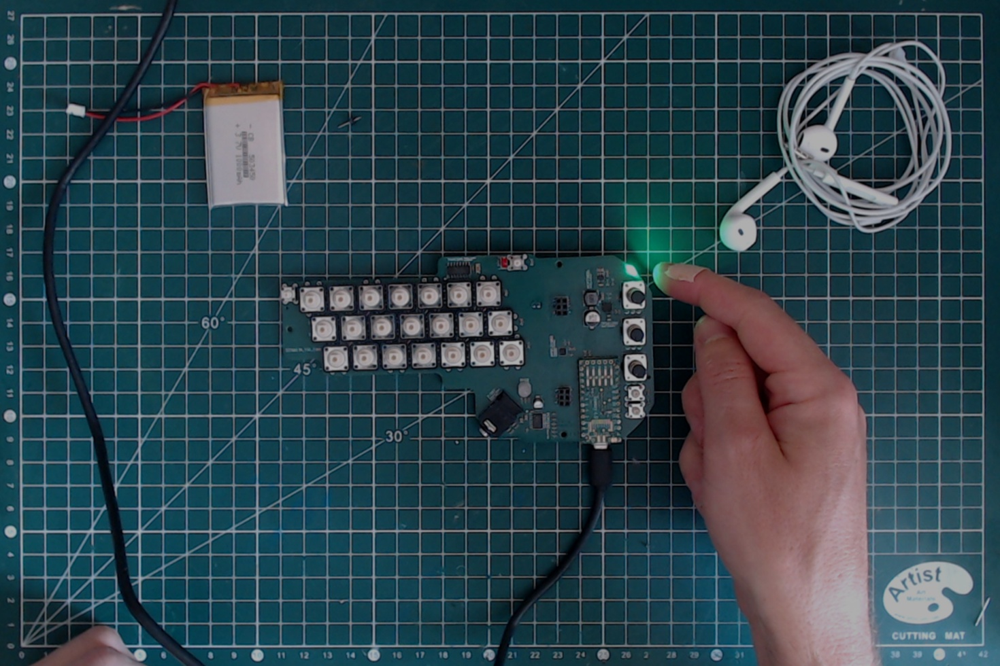.
If it is not green, one the most likely reason is that you forgot to solder the VUSB header. Go back to the Through-hole soldering section and read carefully the part about the Teensy soldering.
Then plug in the battery. Make sure that the polarity is respected (it should be the case if you followed previous instructions). This time the led will be red, indicating that the battery is charging.
 .
.
Installing the Teensy Loader Application
Next you need to install the application that will allow to upload the firmware. It is provided by PJRC and precise instruction for it are available on their website.
Please note that if you have TeensyDuino installed, the Teensy Loader is included with it.
Uploading the firmware
To upload the firmware, please use the following steps:
- Plug the battery into the minichord;
- Plug in the micro USB cable between the minichord and your computer;
- Plug the headphone into the minichord
- Open the Teensy Loader;
- Download the hex file of the firmware from the Source section;
- Drop the hex file on the Teensy loader;
Once all those steps are done, use a header to push on the reset button of the Teensy through the PCB hole.

If you carefully followed those steps, the Teensy Loader will indicate "Download Complete" then "Reboot OK". The main colour led of the PCB should light up.

You can test it by putting the headphones to your hears and push one of the 12x12mm buttons. If you don't hear anything, check that the potentiometers are not turned fully counter-clockwise.
Enclosure manufacturing
The enclosure is composed of two part, the top and the bottom shell. The STL file for those parts is available in the Source section.
Printing the parts
Depending on what equipment you have available, you can choose different alternatives for manufacturing.
FDM printing
If you have a FDM printer, you can use it to make the top and bottom shell. They fit comfortably on a 18x18cm bed. Make sure that you flip the objects to have the flat surface on the bed, no support is required for printing.
Indicatively, on my Prusa Mini+:
- the top shell takes 2 hours to print on a 0.15mm layer height;
- the bottom shell takes 2 hours and 15 minutes to print on a 0.15mm layer height.
The result is satisfactory, though not great.

SLA resin printing
For better quality part, SLA resin printing is an economical alternative. Though the equipment is costly, multiple vendors offer affordable online printing services.
It should cost less than 5€ per part for basic resin choices, for very qualitative parts. Currently 9600 resin is my favorite for a low cost and good quality.
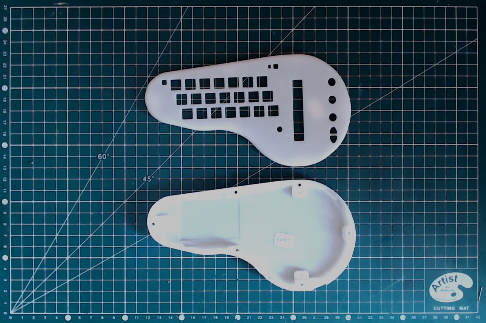
It also possible (for a cost around 1.5x to 2x) to print those part with a transparent resin.

Whether normal or transparent resin, it is possible to use GTC liquid dyes to dye the part, for a very good final result.
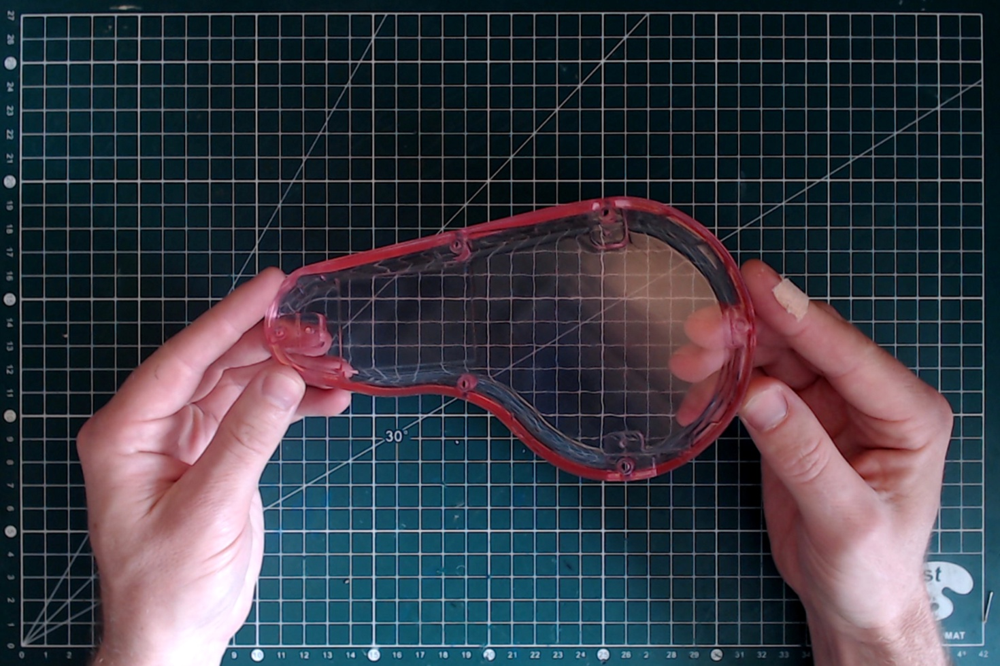
Final assembly
BOM
- Fully assembled minichord PCB;
- Fully assembled touch zone PCB;
- Keycap set;
- 503450 1000mAh battery;
- Top and bottom shells;
- 6x M2.3x8 self-tapping screws;
- 3x M2.3x6 self-tapping screws;
Tools
- X-acto knife (or another precise cutter);
- Phillips electronics screwdrive;
- Double-sided tapes;
[TBD]
Note :
- do the double sided tape between battery and PCB
- don't overtighten the screws ! its only plastic